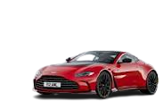

Aston Martin
Aston Martin is an English manufacturer of luxury sports cars and grand tourers. Its predecessor was founded in 1913 by Lionel Martin and Robert Bamford. Steered from 1947 by David Brown, it became associated with expensive grand touring cars in the 1950s and 1960s, and with the fictional character James Bond following his use of a DB5 model in the 1964 film Goldfinger.
Their sports cars are regarded as a British cultural icon. Aston Martin has held a Royal Warrant as purveyor of motorcars to the Prince of Wales since 1982, and has over 160 car dealerships in 53 countries, making it a global automobile brand.The company is traded at the London Stock Exchange and is a constituent of the FTSE 250 Index. In 2003 it received the Queen's Award for Enterprise for outstanding contribution to international trade. The company has survived seven bankruptcies throughout its history.